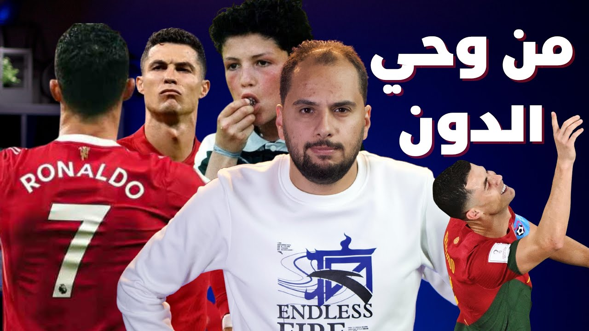

قصص نجاح
من وحي الدون - ازاي تبقي كرستيانو رونالدو في حياتك وشغلك؟
من طفل في أسرة فقيرة في Madeira كان بيعاني من مرض في القلب، لـSporting Lisbon وManchester United والـBallon d'Or وReal Madrid. إيه اللي شكّل الأسطورة Cristiano Ronaldo، وإزاي تبقى زيه في حياتك وشغلك؟

شغّل الحلقةالحكاية المشهورة بتقول إن Cristiano Ronaldo، وهو عنده 16 سنة وبدأ يتصعّد للفريق الأول في Sporting Lisbon، مدرب الفريق وقتها اختبره وكتب عنه تقرير غريب قوي: لعيب أناني، وضعيف بدنيًا، ومش بيقدر يتعامل مع الكورات العالية، وفضل ركنه شوية على الدكة. التقرير ده نفسه ما لقيتلوش مصدر موثوق، لكن الثابت إن المدرب ده هو اللي صعّده للفريق الأول وهو عنده 16 سنة.1
وتمر الأيام والسنين، ويبقى Cristiano Ronaldo واحد من أعظم لاعيبة كرة القدم في التاريخ. إزاي ده حصل؟ وإزاي طفل ضعيف بدنيًا، كان بيعاني من مرض في القلب، يتحول لأسطورة في كرة القدم؟ ده موضوع المقال ده.
إزاي طفولة صعبة شكّلت Ronaldo؟ 0:51
قصة Ronaldo كان ممكن تنتهي قبل ما تبدأ. والدته كان عندها 3 أطفال غيره، وكانت بتعاني ماديًا، خصوصًا في ظل إدمان والده للخمور.2 كل الظروف دي خلت والدة Ronaldo تفكر في إنها تجهضه، لكن الدكاترة رفضوا.3 ولولا ده، Ronaldo ما كانش هيبقى له وجود، وكانت كرة القدم فقدت واحد من أعظم أساطيرها.
ومن الموقف ده تقدر تتخيل المعاناة اللي كان بيعيشها الطفل Ronaldo: أسرة فقيرة، وهو الطفل الرابع فيها، وأبوه مدمن. لكن المعاناة دي هي اللي شكّلت Ronaldo تقريبًا، فكان من صغره عنده هدف واحد ومحدد: إنه يعيش حياته كلها لكرة القدم.
لدرجة إنه ساب المدرسة وقال إنه مش هيعمل حاجة غير إنه يلعب كورة.4 والغريب إن أهله وافقوا، يمكن بسبب الحالة المادية، لكن في النهاية وافقوا. والخطوة دي إدّت لـRonaldo ميزة تنافسية عن كل الأطفال اللي في سنه، وخلته مركز من طفولته على هدف واحد بس: كرة القدم. ما اتشتتش بأي أحلام تانية، زي إنه يطلع مهندس أو دكتور، زي الأحلام اللي كنا بنحلمها كل يوم.
تخيل معايا شخص مش بيعمل حاجة في دنيته غير إنه يلعب كورة، ويتدرب تدريباتها، ويحلم بالبطولات، ويشوف نفسه في أساطيرها. ده أكيد كان أهم عامل في قصة نجاح Ronaldo. ولو شفت حلقة Warren Buffett، هتلاحظ إن واحد من أهم عوامل نجاح Buffett برضه إنه كان عنده هدف من وهو صغير.
من Nacional لـSporting: إزاي اتنقل وهو عنده حوالي 12 سنة؟ 2:19
Ronaldo بدأ يلعب في Andorinha (أندورينيا) وهو عنده 8 سنين.1 وبعدها بدأ يلفت انتباه المدربين في نادي Nacional، مش بس عشان مهارته في الكورة، لكن كمان عشان ثقته في نفسه وشخصيته. ولما Nacional خده، ادّى Andorinha كور وأطقم تدريب بداله.5 تفتكر عقد Cristiano Ronaldo مع Al Nassr دلوقتي يجيب كام كورة وكام طقم؟
صيت Ronaldo بدأ يتسمع لغاية ما وصل للعاصمة Lisbon، وتحديدًا للمسؤولين في نادي Sporting، اللي كانوا مهتمين باكتشاف مواهب جديدة. عملوا له اختبار، وقرروا يضموه تخليص حق. أيوه، زي ما بقولك كده: Nacional كان عليه حوالي 25 ألف يورو لـSporting، فـSporting قرر ياخد Cristiano بداله.1 ولو جينا للحق، ده مبلغ كبير على طفل في سنه.
وانتقل Ronaldo يعيش في العاصمة بعد انضمامه لـSporting Lisbon، وقتها كان عنده حوالي 12 سنة.1 وأعتقد إن دي حاجة صعبة جدًا على طفل في السن ده: إنه يسيب أسرته ويروح يعيش مغترب في مدينة تانية. وده ما منعش إنه مر بفترات يأس كان بيفكر فيها يرجع لأسرته في Madeira، لكن في النهاية كانت أحلامه بتنتصر على أفكار اليأس دي.
في الفترة دي بدأ Cristiano يشتكي من تسارع في ضربات القلب، وشخّصه الدكتور بمرض في القلب محتاج جراحة، وفعلًا عمل العملية.6 وبعدها بدأ يهتم أكتر بنظامه الغذائي ولياقته البدنية. ولما كمّل 16 سنة، بدأ يتصعّد للفريق الأول في Sporting.1
تقرير Boloni: حقيقة ولا حكاية مشهورة؟ 3:44
مدرب الفريق الأول وقتها كان Laszlo Boloni، والحكاية المشهورة بتقول إنه كتب أول تقرير عن Cristiano وقال فيه إنه لعيب أناني، مش بيعرف يتعامل مع الكورات العالية، ومعندوش أي فكر تكتيكي، بالإضافة إلى إنه ضعيف بدنيًا. التقرير ده ما لقيتلوش مصدر موثوق. اللي لقيته إن Boloni نفسه قال في حوار مع جريدة L'Equipe (ليكيب) إن Cristiano كان عنده «غرور وأنانية» من النوع المعتاد عند المهاجمين.7
وسواء التقرير اتكتب ولا لأ، الكلام ده كان قريب من الحقيقة: Ronaldo وقتها كان موهوب فعلًا، لكن لعبه كان استعراضي، وما كانش بيعمل أي تأثير في الفريق. وده كان سبب كافي إنه يقعد على الدكة لفترة، وفعلًا أول ماتش رسمي ليه مع الفريق الأول جه بعد ما Boloni صعّده بحوالي سنة.1 في السنة دي بدأ يطور في نفسه وفي طريقة لعبه، عشان بعدها يبتدي يشارك في بعض المباريات ويسجل فيها كمان.
الكام مباراة اللي لعبها Ronaldo مع Sporting Lisbon ما كانوش كتير، لكن كانوا كافيين إنهم يلفتوا انتباه أندية أوروبا. ده غير مجهودات وكيل أعماله، اللي بدأ يسوّق له في كل أنحاء أوروبا.
إزاي كانت بداية Ronaldo مع Manchester United؟ 4:28
في 2003، Ronaldo وقّع عقد مع Manchester United لمدة 5 سنين.8 لكن البداية كانت عكس المتوقع: لمساته استعراضية، مش بيلعب لعب جماعي، وكان بيقع من أي تدخلات، بالإضافة لإنه كان ضعيف بدنيًا. كل الحاجات دي خلته مش محبوب وسط الفريق.
في السنة التانية بدأ يتحسن من الناحية البدنية، ومستواه اتحسن شوية عن السنة اللي قبلها. لكنه كان لسه بيعاني من موضوع اللمسات الاستعراضية، وما كانش بيعرف ياخد القرار الصح: إمتى يباصي وإمتى يشوت. وكانت حصيلة أهدافه في تاني موسم ليه 5 أهداف في الدوري و4 أهداف في الكاس.4
أما الموسم التالت، فكان Ronaldo بيعاني معاناة نفسية جدًا نتيجة وفاة والده،2 وده طبعًا انعكس على أدائه في الملعب وعلاقته مع زمايله في الفريق.
وبعدها بسنة تقريبًا، حصلت له أزمة كبيرة مع الجماهير الإنجليزية بسبب غمزة في ربع نهائي كاس العالم 2006، في الماتش اللي كان بين إنجلترا والبرتغال.9 الغمزة اللي التقطتها الكاميرات جت بعد طرد نجم المنتخب الإنجليزي Rooney، والماتش انتهى بخروج إنجلترا. وبصراحة، الصحافة ما لقيتش غير إنها تمسك Cristiano Ronaldo وتقدمه كبش فدا لجماهير إنجلترا.
الدون في الفترة دي كان منبوذ تقريبًا من زمايله، والجماهير كانت بترفع لافتات ضده بتقول له ارحل. وبسبب الضغوط دي، Ronaldo بدأ فعلًا يفكر يسيب Manchester United، وقال لمدير أعماله يدوّر له على عروض. وبدأت المفاوضات، لكن بعد تدخل السير Ferguson، اقتنع Ronaldo إن لازم يتحلى بالشجاعة ويكمل.
موسم 2006-2007: إزاي الحرب مع نفسه غيّرت كل حاجة؟ 6:01
بعدها بدأت حرب حقيقية، لكن الحرب ما كانتش ضد منتقديه. كانت حرب مع نفسه: ضد طباعه، وعشان يغيّر طريقة لعبه وطريقة تفكيره. والنتيجة؟ موسم استثنائي، موسم 2006-2007،4 اللي نقدر نقول عليه إنه موسم انطلاق Ronaldo وتحوله من لعيب كويس للاعب أسطوري. في الموسم ده قدر يفوز بجائزة لاعب الشهر في الدوري الإنجليزي لشهرين متتاليين.
وعشان تعرف قد إيه الموسم ده كان استثنائي، تعالى نقارن: في أول 3 مواسم ليه لعب حوالي 137 مباراة وسجل حوالي 27 هدف. أما في الموسم الرابع لوحده، فسجل 23 هدف.4 ده غير فوزه بالدوري الإنجليزي، وبجائزة أفضل لاعب وأفضل لاعب شاب. وفي نفس الموسم جدد عقده مع United لمدة 5 سنين كاملين.10
من سنة تقريبًا كان Ronaldo منبوذ وسط زمايله والجمهور بيهتف ضده. لكن كل ده اتبدل: الجمهور بدأ يهتف باسمه، وعلاقته مع زمايله بقت فل.
إزاي الطرد بقى أفضل حاجة حصلت لـRonaldo؟ 7:04
في الموسم اللي بعده، 2007-2008، الكل كان مترقب انطلاقة Ronaldo، خصوصًا بعد الثقة اللي اكتسبها من الموسم اللي قبله. لكن البداية ما كانتش زي ما United كان متوقع: أول ماتش خلص تعادل،11 وفي الماتش التاني Ronaldo اتطرد واتوقف 3 ماتشات.4 بداية محبطة بعد نجاح كبير، صح؟
بس عاوز أقولك إن ده تقريبًا كان أفضل حاجة حصلت لـRonaldo. الطرد والإيقاف خلّوا مساعد Ferguson وقتها يقعد معاه ويحلل أداءه، وقرروا مع بعض يشتغلوا على تلات حاجات كان الدون محتاجها. الأولى: الكورات الهوائية، اللي كان Cristiano ضعيف فيها رغم قوته البدنية وطول قامته. التانية: التسديد على الطاير من غير ما يستلم الكورة. والتالتة: تنمية مهاراته التكتيكية، والتحرك من غير كورة وبالكورة.
وفعلًا Ronaldo اشتغل واتدرب على الحاجات دي طول فترة الإيقاف. ولما رجع، بدأ يسجل أهداف بدماغه، وأهداف من لمسة واحدة، وتحركاته كانت مختلفة تمامًا في الملعب. عشان ينهي الموسم ده برقم قياسي من الأهداف، حوالي 42 هدف، ومعاه إنجاز كبير مع الفريق: الدوري الإنجليزي ودوري الأبطال.6
من الـBallon d'Or لـReal Madrid: إزاي اتوّج Ronaldo؟ 8:09
في السنة اللي بعدها، Cristiano ما كانش محظوظ كفاية في البداية: اتصاب واضطر يعمل جراحة في الكاحل، وغاب عن الملاعب أكتر من شهرين.1213 لكن الغريب إنه بعد عودته من الإصابة قدر يستعيد مستواه بسرعة جدًا، ووصل لهدفه الـ100 مع United في الموسم ده.4
وفي السنة دي فاز بالـBallon d'Or، وفاز بكاس العالم للأندية، ده غير الدوري وكاس الرابطة الإنجليزي.4 وبعد السيزون ده، وقّع Cristiano Ronaldo مع النادي الملكي Real Madrid عقد لمدة 6 سنين، بقيمة 93 مليون يورو.1415
Cristiano راح لـReal Madrid وهو ملك متوّج بالعديد من الألقاب. وجماهير النادي الملكي كانت شايفاه المنقذ اللي هينقذهم من سيطرة Barcelona على البطولات. وحماس الجمهور وفرحتهم بيه كان واضح في حفل الاستقبال، اللي حضره حوالي 80 ألف مشجع،15 ولحد وقت الحلقة، الرقم ده محدش كسره.
والكلام عن أرقام Ronaldo مع Real Madrid محتاج حلقة لوحده. لكن هنا حبيت أركز بس على الفترة اللي شكّلت الأسطورة Ronaldo، وإزاي تستفيد منها في حياتك.
إزاي تبقى Cristiano Ronaldo في حياتك وشغلك؟ 9:08
أنا شايف إن أهم حاجة شكّلت الأسطورة Cristiano Ronaldo هي تركيزه في حاجة واحدة بس وتخصصه فيها. ودي بصراحة ميزة في الرياضة عمومًا، وفي كرة القدم خصوصًا: لما بتنجح في حاجة، مش بيكون قدامك options كتير تشتتك، مش بيكون قدامك غير إنك تنجح نجاح أكبر.
عشان أفهّمك قصدي، خد مثال بسيط: نفترض إنك بتشتغل في شركة وبتكتب content، ومهارات الكتابة عندك كل يوم بتتطور، لحد ما بقيت حريف كتابة. إيه اللي هيحصل بعد كده؟ حاجة من اتنين: يا الشركة ترقّيك وتخليك مسؤول تيم الـcontent عندها، يا إنت نفسك تفكر تعمل شركة وتقدم خدماتك للعملا.
وبصراحة الفكرتين وحشين جدًا، لإنك بتضحي بهوايتك وموهبتك، وبتروح تشتغل في حاجة تانية خالص هي الإدارة، وتبدأ تسحل نفسك في حاجات إدارية إنت مش فاهمها. وبالتالي بتضيّع نفسك، ومستحيل تبقى أسطورة في مجالك. عكس لعيب الكورة، اللي لما بينجح ومهاراته بتزيد مش بيفكر يعمل نادي ويديره، أو يروح يدرب وهو في عز مجده. لأ، بيكمل في الحاجة اللي هو متخصص فيها وشاطر فيها. فنصيحتي ليك: لو بتعمل حاجة وشاطر فيها، ما تشتتش نفسك وتحاول تتوسع بسرعة أو تترقى بطريقة غلط. اتوسع فيها، بإنك تقدمها لشركات أكبر، أو تتطور من كاتب مقالات لكاتب روايات وأعمال فنية.
تاني نقطة قوة شكّلت Ronaldo كأسطورة هي إيمانه بنفسه. كان مؤمن بموهبته، وكان شايف في معظم الوقت إنه أفضل لاعب في العالم. والإيمان ده خلاه يعدّي أصعب فترات حياته: غربته في Lisbon وهو طفل صغير بعيد عن أهله، وعرّفه إن الصعب أكيد هينتهي، ووقت الخير أكيد جاي، وإنه لازم يعدّيه عشان يوصل لهدفه. وكان مؤمن بقدراته في أول فترة ليه مع United، والإيمان ده حصّنه من اليأس لما كان مستواه أقل من المتوقع، فاستمر يحسّن نفسه ويطور مهاراته لغاية ما بقى واحد من أساطير النادي.
أما نقطة القوة التالتة، فهي إنه كان مقاتل. مش بس في لعبه وتدريباته، لأ، كمان مقاتل مع نفسه وضد عيوبه. أحيانًا إيمانه وثقته بنفسه كانوا بيخلّوه مغرور، لكنه كان بيقاتل طبع الغرور ده في شخصيته، وده كان واضح جدًا لما بدأ يستغنى عن اللعب الاستعراضي ويلعب لعب جماعي.
وإنت كمان، لو تخصصت في حاجة واحدة وطورت نفسك فيها، وكان عندك الإيمان بنفسك وقدراتك، وكنت مقاتل، أكيد هتوصل زي Cristiano. وزي ما بنقول دايمًا: اليوم أفضل من الأمس، وغدًا سيكون الأفضل.
فصول الحلقة
- 0:51 إزاي طفولة صعبة شكّلت Ronaldo؟
- 2:19 من Nacional لـSporting: إزاي اتنقل وهو عنده حوالي 12 سنة؟
- 3:44 تقرير Boloni: حقيقة ولا حكاية مشهورة؟
- 4:28 إزاي كانت بداية Ronaldo مع Manchester United؟
- 6:01 موسم 2006-2007: إزاي الحرب مع نفسه غيّرت كل حاجة؟
- 7:04 إزاي الطرد بقى أفضل حاجة حصلت لـRonaldo؟
- 8:09 من الـBallon d'Or لـReal Madrid: إزاي اتوّج Ronaldo؟
- 9:08 إزاي تبقى Cristiano Ronaldo في حياتك وشغلك؟
أسئلة شائعة
ليه Sporting خد Ronaldo تخليص حق؟
لإن Sporting كان ليه حوالي 25 ألف يورو عند نادي Nacional، فقرروا ياخدوا Cristiano بيهم. وانتقل Ronaldo يعيش في Lisbon وهو عنده حوالي 12 سنة.
هل Ronaldo كان عنده مرض في القلب؟
أيوه، بدأ يشتكي من تسارع ضربات القلب، والدكتور شخّصه بمرض في القلب محتاج جراحة، وفعلًا عمل العملية. وبعدها بدأ يهتم أكتر بنظامه الغذائي ولياقته البدنية.
إيه اللي غيّر مستوى Ronaldo في Manchester United؟
حرب مع نفسه ضد طباعه، غيّر فيها طريقة لعبه وطريقة تفكيره، فبقى موسم 2006-2007 موسم انطلاقه. وبعد الطرد والإيقاف، اشتغل على الكورات الهوائية والتسديد على الطاير والتحرك من غير كورة.
إزاي تبقى Cristiano Ronaldo في شغلك؟
اتخصص في حاجة واحدة وطوّر نفسك فيها، وخليك مؤمن بنفسك وبقدراتك، وكن مقاتل في شغلك ومع نفسك وضد عيوبك.
تصحيحات
- حكيت قصة إن Laszlo Boloni كتب تقرير عن Ronaldo (لعيب أناني، ضعيف بدنيًا، مش بيعرف يتعامل مع الكورات العالية ومعندوش فكر تكتيكي) كأنها حقيقة؛ ما لقيتش مصدر موثوق للتقرير ده. الثابت إن Boloni هو اللي ضمّه لتدريبات الفريق الأول في موسم 2001/2002 وهو عنده 16 سنة، وإن أول ماتش رسمي ليه كان يوم 14 أغسطس 2002 وهو عنده 17 سنة.1 وBoloni نفسه قال لجريدة L'Equipe سنة 2021 إن Cristiano كان عنده «غرور وأنانية» من النوع المعتاد عند المهاجمين.7
- قلت إن الطبيب المعالج أقنع والدة Ronaldo تغيّر فكرة الإجهاض؛ اللي حكته هي في كتابها سنة 2014 إن الدكاترة رفضوا يعملوا الإجهاض.3
- قلت إنه ساب المدرسة في مرحلة الابتدائية؛ الثابت إنه ساب التعليم وهو عنده حوالي 14 سنة عشان يتفرغ للكورة.4
- قلت إنه وقّع أول عقد في حياته وهو عنده 8 سنين مقابل طقمين و30 كورة؛ الثابت إنه بدأ يلعب في Andorinha وهو عنده 8 سنين،1 ولما انتقل لـNacional وهو عنده 10 سنين، Nacional ادّى Andorinha كور وأطقم تدريب.5
- قلت إن Manchester United دفع فيه 12.3 مليون يورو سنة 2003؛ المبلغ كان 12.24 مليون جنيه إسترليني، مش يورو.8
- قلت إنه لعب 54 مباراة في موسم 2006-2007؛ الأرقام المنشورة بتقول 53 مباراة سجل فيها 23 هدف.4
- قلت إن United خسر أول ماتش في موسم 2007-2008؛ الماتش ده خلص تعادل 0-0 مع Reading.11
- قلت إن الجراحة قعّدته في البيت حوالي 6 أسابيع؛ الجراحة كانت يوم 7 يوليو 2008، وأول ماتش لعبه بعدها كان يوم 17 سبتمبر 2008، يعني حوالي 10 أسابيع.1213
المصادر
- dn.pt https://www.dn.pt/desportos/ronaldo-o-ovni-de-aurelio-a-lenda-de-boloni-e-a-pessoa-maravilhosa-de-scolari-11492828.html
- biography.com https://www.biography.com/athlete/cristiano-ronaldo
- tntsports.co.uk https://www.tntsports.co.uk/football/liga/2014-2015/cristiano-ronaldos-mother-i-wanted-an-abortion-but-god-said-no_sto4979169/story.shtml
- en.wikipedia.org https://en.wikipedia.org/wiki/Cristiano_Ronaldo
- plataformamedia.com https://www.plataformamedia.com/2020/04/14/demos-bolas-e-fatos-de-treino-em-troca-de-cristiano-ronaldo-12067411/
- web.archive.org https://web.archive.org/web/20231228075256/https://www.britannica.com/biography/Cristiano-Ronaldo
- observador.pt https://observador.pt/2021/06/22/boloni-cristiano-nunca-superava-o-jardel-e-nao-aceitava-isso-dizia-vamos-mister-mais-uma-serie-mais-uma-serie/
- news.bbc.co.uk https://news.bbc.co.uk/sport2/hi/football/teams/m/man_utd/3142959.stm
- theguardian.com https://www.theguardian.com/football/2009/jun/11/cristiano-ronaldo-transfer-real-madrid
- uefa.com https://www.uefa.com/uefachampionsleague/news/01c0-0e6e3e729b83-be21610a084c-1000--ronaldo-takes-root-at-old-trafford
- arabnews.com https://www.arabnews.com/node/301921
- news.bbc.co.uk https://news.bbc.co.uk/sport2/hi/football/teams/m/man_utd/7486670.stm
- uefa.com https://www.uefa.com/uefachampionsleague/news/01d1-0e6fe37eefcc-d0994cbb9748-1000--villarreal-return-to-frustrate-united/
- laprensa.hn https://www.laprensa.hn/deportes/real-madrid-tambien-oculto-el-precio-final-del-fichaje-de-cristiano-ronaldo-EXLP924246
- theguardian.com https://www.theguardian.com/football/2009/jul/06/cristiano-ronaldo-real-madrid-bernabeu